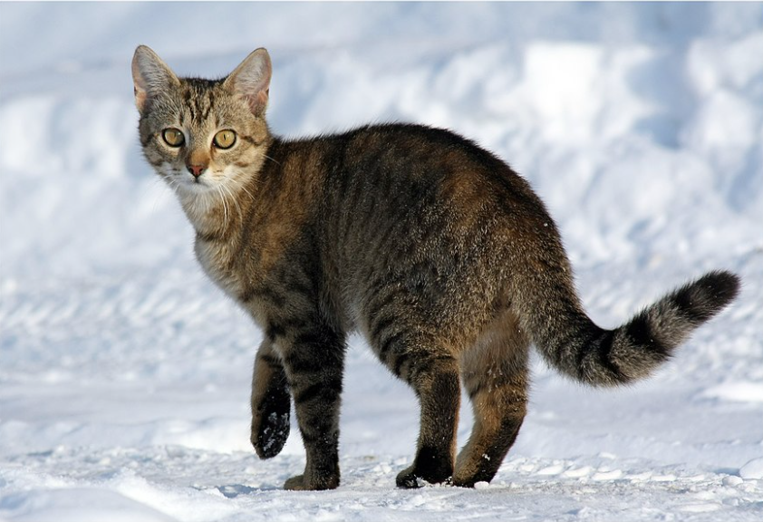

Ко́шка (лат. Felis catus) — домашнее животное, одно из наиболее популярных[1] (наряду с собакой) «животных-компаньонов»[2][3][4].
С точки зрения научной систематики, домашняя кошка — млекопитающее семейства кошачьих отряда хищных. Одни исследователи рассматривают домашнюю кошку как подвид дикой кошки[5], другие — как отдельный биологический вид[6].

Являясь одиночным охотником на грызунов и других мелких животных, кошка — социальное животное[7], использующее для общения широкий диапазон звуковых сигналов, а также феромоны и движения тела[8].
В настоящее время в мире насчитывается около 600 млн домашних кошек[9], выведено около 200 пород, от длинношёрстных (персидская кошка) до лишённых шерсти (сфинксы), признанных и зарегистрированных различными фелинологическими организациями.
На протяжении десяти тысяч лет кошки ценятся человеком, в том числе за способность охотиться на грызунов и других домашних вредителей[10][11], а также за способность развлекать и снимать стресс